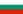
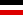
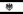

Awards and Decorations
Ottoman Empire and Republic of Turkey
- Ottoman Empire: Fifth Class Knight Order of the Medjidie awarded by Abdul Hamid II, (25 December 1906)
- Ottoman Empire: Silver Imtiyaz Medal awarded by Mehmed V, (30 April 1915)
- Ottoman Empire: Silver Liakat Medal awarded by Mehmed V, (1 September 1915)
- Ottoman Empire: Golden Liakat Medal awarded by Mehmed V, (17 January 1916)
- Ottoman Empire: Second Class Knight Order of Osmanieh awarded by Mehmed V, (1 February 1916)
- Ottoman Empire: Second Class Knight Order of the Medjidie awarded by Mehmed V, (12 December 1916)
- Ottoman Empire: Golden Imtiyaz Medal awarded by Mehmed V, (23 September 1917)
- Ottoman Empire: First Class Knight Order of the Medjidie awarded by Mehmed V, (16 December 1917)
- Ottoman Empire: Gallipoli Star awarded by Mehmed VI, (11 May 1918)
- Turkey: Medal of Independence awarded by Grand National Assembly of Turkey, (21 November 1923)
- Turkey: Murassa Order awarded by Turkish Aeronautical Association (20 May 1925)
- Kingdom of Bulgaria: Commander Grand Cross Order of Saint Alexander awarded by Ferdinand I, (1915)
- German Empire: Iron Cross of the German Empire awarded by Wilhelm II, (1915)
- Austria-Hungary: Military Merit Medal (Austria-Hungary) awarded by Franz Joseph I, (1916)
- Austria-Hungary: 3rd Class Military Merit Cross (Austria-Hungary) awarded by Franz Joseph I, (27 July 1916)
- German Empire: 1st Class Iron Cross of the German Empire awarded by Wilhelm II,(1917)
- German Empire: 2nd Class Iron Cross of the German Empire awarded by Wilhelm II, (9 September 1917)
- Austria-Hungary: 2nd Class Military Merit Cross (Austria-Hungary) awarded by Charles I,
- Kingdom of Prussia: 1st Class Order of the Crown Prussia awarded by Wilhelm II, (1918)
- Kingdom of Afghanistan: Alüyülala Order of Kingdom of Afghanistan awarded by Amānullāh Khān, (27 March 1923)